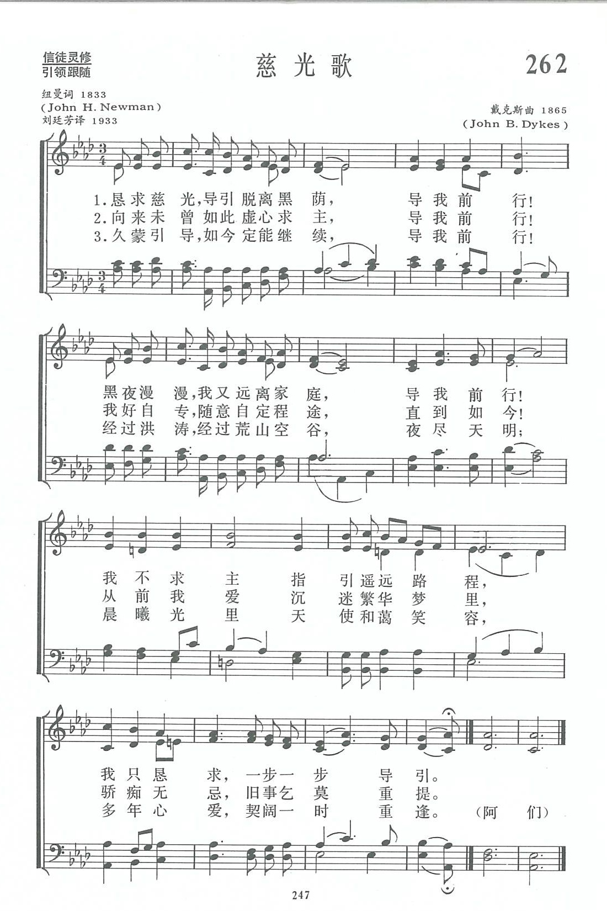
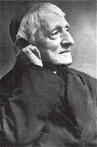
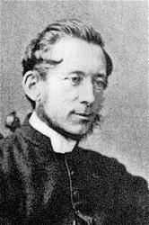
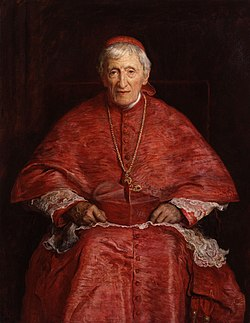
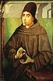

|
|
|
|
Refrain: 1 The night is dark, and I am far from home, 2 Not always thus, I seldom looked for you, 3 So long your pow'r has blest me on the way, |
262首 《慈光歌》 |
|
https://www.zanmeishige.com/tab/13935.html?songbook=1&index=262

|
|
|
|
|


https://www.youtube.com/watch?v=BA2GYZc_Y0Q - Lead Kindly Light Brigham City Priesthood Choir
https://www.youtube.com/watch?v=dA6Ysu0pbKw https://www.youtube.com/watch?v=PnIYLEXHeFk -
Pope Benedict XVI personally travelled to England to beatify Cardinal
Newman. The video "Lead, Kindly Light"
https://www.youtube.com/watch?v=jJXziYVdbGE&t=1840s
| Text: | Lead, Kindly Light |
| Author: | John H. Newman, 1801-1890 |
| Tune: | LUX BENIGNA |
| Composer: | John B. Dykes, 1823-1876 |
| Short Name: | John Henry Newman |
| Full Name: | Newman, John Henry, 1801-1890 |
| Birth Year: | 1801 |
| Death Year: | 1890 |
Newman, John Henry ,

D.D. The hymnological side of Cardinal Newman's life and work is so small when compared with the causes which have ruled, and the events which have accompanied his life as a whole, that the barest outline of biographical facts and summary of poetical works comprise all that properly belongs to this work. Cardinal Newman was the eldest son of John Newman, and was born in London, Feb. 21, 1801. He was educated at Ealing under Dr. John Nicholas, and at Trinity College, Oxford, where he graduated in honours in 1820, and became a Fellow of Oriel in 1822. Taking Holy Orders in 1824, he was for a short time Vice-Principal of St. Alban's Hall, and then Tutor of Oriel. His appointment to St. Mary's, Oxford, was in the spring of 1828. In 1827 he was Public Examiner, and in 1830 one of the Select University Preachers. His association with Keble, Pusey, and others, in what is known as "The Oxford Movement," together with the periodical publication of the Tracts for the Times, are matters of history. It is well known how that Tract 90, entitled Bernards on Certain Passages in the Thirty-nine Articles, in 1841, was followed by his retirement to Littlemore; his formal recantation, in February, 1843, of all that he had said against Rome; his resignation in September of the same year of St. Mary's and Littlemore; and of his formal application to be received into the communion of the Church of Rome, Oct. 8, 1845. In 1848 he became Father Superior of the Oratory of St. Philip Neri, at Birmingham; in 1854 Rector of the newly founded Roman Catholic University at Dublin; and in 1858 he removed to the Edgbaston Oratory, Birmingham. In 1879 he was created a Cardinal, and thus received the highest dignity it is in the power of the Pope to bestow. Cardinal Newman's prose works are numerous, and his Parochial Sermons especially being very popular. His Apologia pro Vita Sua, 1864, is a lucid exposition and masterly defence of his life and work.
Cardinal Newman's poetical work began with poems and lyrical pieces which he contributed to the British Magazine, in 1832-4 (with other pieces by Keble and others), under the title of Lyra Apostolica. In 1836 these poems were collected and published under the same title, and Greek letters were added to distinguish the authorship of each piece, his being δ. Only a few of his poems from this work have come into use as hymns. The most notable is, "Lead, kindly Light". His Tract for the Times, No. 75, On the Roman Breviary, 1836, contained translations of 14 Latin hymns. Of these 10 were repeated in his Verses on Religious Subjects, 1853, and his Verses on Various Occasions, 1865, and translations of 24 additional Latin hymns were added. Several of these translations are in common use, the most widely known being "Nunc Sancte nobis" ("Come, Holy Ghost, Who ever One"). His collection of Latin hymns from the Roman and Paris Breviaries, and other sources was published as Hymni Ecclesiae, in 1838, and again in 1865. His Dream of Gerontius, a poem from which his fine hymn, "Praise to the Holiest in the height," is taken, appeared in his Verses on Various Occasions, in 1868. Cardinal Newman's influence on hymnology has not been of a marked character. Two brilliant original pieces, and little more than half a dozen translations from the Latin, are all that can claim to rank with his inimitable prose.
--John Julian, Dictionary of Hymnology (1907)
=================
Notes
Lead, kindly Light, amid the encircling gloom. Cardinal J. H. Newman. [Evening. Divine Guidance Desired.] This exquisite lyric has been the cause of much controversy, arising from the facts that, first, the statement has been made that it was the passionate outpouring of the author's soul when perplexed with doubt as to his duty with regard to entering the Roman Communion or no; and the second, that the closing lines—
“And with the morn those angel faces smile,
Which I have loved long since and lost awhile,”
through their
ambiguity, have led to several ingenious interpretations, some of which
appeared in Notes and Queries in
1880. The answer to each of these statements must be given, as far as
possible, in Cardinal Newman's own words.
i. Cardinal Newman, in his Apologia Pro Vita Sua,
1864, pp. 94-100, sets forth his attitude at the time this lyric was
written, both towards the Church of England and the Church of Rome, in a
most careful and laborate manner. His statements, in a condensed form,
but in his own words, are:—
While I was engaged in writing my work on the Arians [1832], great events were happening at home and abroad, which brought out into form and passionate expression the various beliefs which had so gradually been winning their way into my mind. Shortly before, there had been a Revolution in France; the Bourbons had been dismissed: and 1 believed that it was unchristian for nations to cast off their governors, and, much more, sovereigns who had the divine right of inheritance. Again, the great Reform Agitation was going on around me as I wrote. The Whigs had come into power; Lord Grey had told the Bishops to set their house in order, and some of the Prelates had been insulted and threatened in the streets of London. The vital question was how were we to keep the Church from being liberalized? There was such apathy on the subject in some quarters, such imbecile alarm in others; the true principles of Churchmanship seemed so radically decayed, and there were such distractions in the Councils of the Clergy......With the Establishment thus divided and threatened, thus ignorant of its true strength, I compared that fresh vigorous power of which I was reading in the first centuries......I said to myself, ‘Look on this picture and on that'; I felt affection for my own Church, but not tenderness; I felt dismay at her prospects, anger and scorn at her do-nothing perplexity. I thought that if Liberalism once got a footing within her, it was sure of the victory in the event. I saw that Reformation principles were powerless to rescue her. As to leaving her, the thought never crossed my imagination; still I ever kept before me that there was something greater than the Established Church, and that that was the Church Catholic and Apostolic, set up from the beginning, of which she was but the local presence and organ. She was nothing, unless she was this. She must be dealt with strongly, or she would be lost. There was need of a second Reformation.
"At this time 1 was disengaged from College duties, and my health had suffered from the labours involved in the composition of my volume......I was easily persuaded to join Hurrell Froude and his father, who were going to the south of Europe for the health of the former. We set out in December, 1832. It was during this expedition that my verses which are in the Lyra Apostolica were written; a few indeed before it; but not more than one or two of them after it.....The strangeness of foreign life threw me back into myself; I found pleasure in historical sites and beautiful scenes, not in men and manners. We kept clear of Catholics throughout our tour......I saw nothing but what was external; of the hidden life of Catholics I knew nothing. I was still driven back into myself, and felt my isolation. England was in my thoughts solely, and the news from England came rarely and imperfectly. The Bill for the Suppression of the Irish Sees was in progress, and filled my mind. I had fierce thoughts against the Liberals. It was the success of the Liberal cause which fretted me inwardly. 1 became fierce against its instruments and its manifestations......Especially when I was left to myself, the thought came upon me that deliverance is wrought, not by the many but by the few, not by bodies but by persons....I began to think I had a mission....When we took leave of Monsignore Wiseman, he had courteously expressed a wish that we might make a second visit to Rome: I said with great gravity,‘We have a work to do in England.' I went down at once to Sicily, and the presentiment grew stronger. I struck into the middle of the island, and fell ill of a fever at Leonforte. My servant thought that I was dying, and begged for my last directions. I gave them, as he wished; but I said ‘I shall not die.' I repeated, 'I shall not die, for I have not sinned against light, I have not sinned against light.' I never have been able to make out at all what I meant. I got to Castro-Giovanni, and was laid up there for nearly three weeks. Towards the end of May I set off for Palermo, taking three days for the journey. Before starting from my inn in the morning of May 26th or 27th, I sat down oh my bed, and began to sob bitterly. My servant, who acted as my nurse, asked what ailed me. I could only answer, 'I have a work to do in England.' I was aching to get home; yet for want of a vessel I was kept at Palermo for three weeks. I began to visit the Churches, and they calmed my impatience, though I did not attend any services. I knew nothing of the Presence of the Blessed Sacrament then. At last I got off in an orange boat bound for Marseilles. We were becalmed a whole week in the Straits of Bonifacio. Then it was that I wrote the lines 'Lead, kindly light' [June 16, 1833], which have since become well known. I was writing verses the whole time of my passage. At length I got to Marseilles, and set off for England. The fatigue of travelling was too much for me, and I was laid up for several days at Lyons. At last I got off again and did not stop night or day till I reached England, and my mother s house. My brother had arrived from Persia only a few hours before. This was Tuesday. The fol¬lowing Sunday, July 14th, Mr. Keble preached the Assize Sermon in the University Pulpit. It was published under the title of «National Apostasy.' I have ever considered and kept the day as the start of the religious movement of 1833."
In writing of further changes of thought which he underwent during the succeeding six years, Cardinal Newman says, Apologia, p. 214:—
"Now to trace the succession of thoughts, and the conclusions, and the consequent innovations on my previous belief, and the general conduct, to which I was led, upon this sudden visitation [stated previously]. And first, I will say, whatever comes of saying it, for I leave inferences to others, that for years I must have had something of an habitual notion, though it was latent, and had never led me to distrust my own convictions, that my mind had not found its ultimate rest, and that in some sense or other I was on journey. During the same passage across the Mediterranean in which I wrote ‘Lead, kindly light,' I also wrote verses, which are found in the Lyra under the head of ‘Providences,' beginning, ‘When I look back.' This was in 1833; and, since I have begun this narrative, I have found a memorandum under the date of September 7,1829, in which I speak of myself, as now in my room in Oriel College, slowly advancing, &c, and led on by God's hand blindly, not knowing whither He is taking me.'"
This, then, is the author's account of the state of his personal feeling, and the circumstances which surrounded him at the time that he wrote what must be regarded as one of the finest lyrics of the nineteenth century. Angry at the state of disunion and supineness in the Church he still loved and in which he still believed; confident that he had "a mission," "a work to do in England;", passionately longing for home and the converse of friends ; sick in body to prostration, and, as some around him feared, even unto death; feeling that he should not die but live, and that he must work, but knowing hot what that work was to be, how it was to be done, or to what it might tend, he breathed forth the impassioned and pathetic prayer, one of the birth-pangs, it might be called, of the Oxford movement of 1833:—
"Lead, Kindly Light, amid the encircling gloom,
Lead Thou me on; The night is dark, and I am far from home,
Lead Thou me on.
Keep Thou my feet; I do not ask to see
The distant scene; one step enough for me.
I was not ever thus, nor prayed that Thou
Shouldst lead me on;
I loved to choose and see my path; but now
Lead Thou me on.
I loved the garish day, and, spite of fears,
Pride ruled my will: remember not past years.
So long Thy power hath blest me, sure it still
Will lead me on
O'er moor and fen, o’er crag and torrent, till
The night is gone,
And with the morn those angel faces smile,
Which I have loved long since, and lost awhile."
ii. The ambiguity of
the two closing lines has caused much speculation and controversy.
Summarised, the principal interpretations
1. The troubled and hesitating spirit finds itself "amid encircling
gloom"; "the night is dark"; and the soul has lost awhile the "angel
faces," not only of Fancy and Hope and Youthful Confidence, but of those
divine forms of faith and assurance, which it had "loved long since,"
which had accompanied the believer during the early fervour of his
belief.— Notes and Queries, April 3, 1880.
2. A second interpretation is that "those angel faces" are the faces of
the ministering spirits, "sent forth to minister to them who shall be
heirs of salvation."
3. A third Interpretation is that these lines are expressive of the
Christian's hope of being re-united on the resurrection morn with those
loved and lost by death on earth. (Notes & Queries, April 3,
1880.) This application of the lines is set forth in a window of one of
the churches of Clevedon. An angel is represented as soaring upwards,
bearing away from earth two infants in his arms, and these two lines are
quoted underneath.-- Notes and Queries, 6th S. I.,
Aug. 7, 1880, p. 118.
4. A fourth interpretation is, "When all the absorbing business, and
care and pleasures of life are beginning to weary us, when the world is
losing something of its hold on us, and we once more catch glimpses as
it were of that other life which most of us here at some time dreamed,
and perhaps, though all too feebly, striven for, then the better soul
wakes from its slumbers ; the night is gone, "And with the morn those
angel faces smile," &c. —-Notes and Queries, 6th S. I., May 8,
1880, p. 385.
5. Another explanation is suggested in the question, "Do these lines
refer to the more intimate communion of infants with the unseen world of
spirits which was lost in later years?"— Notes and
Queries, 6th S. I., June 12, 1880, p. 480.
To all which, and to all other interpretations that have been made or
may be made, Cardinal Newman gives answer in a letter to Dr. Greenhill,
printed in the Guardian, Feb. 25, 1880, p. 257, and repeated inNotes
& Queries, 6th 8. I., March 20, 1880, p. 232.
"The Oratory, January 18, 1879.
"My dear Dr. Greenhill,—You flatter me by your questions; but I think it was Keble who, when asked it in his own case, answered that poets were not bound to be critics, or to give a sense to what they had written, and though I am not like him, a poet, at least I may plead that I am not bound to remember my own meaning, whatever it was, at the end of almost fifty years. Anyhow there must be a statute of limitation for writers of verse, or it would be quite tyranny if in an art, which is the expression, not of truth, but of imagination and sentiment, one were obliged to be ready for examination on the transient states of mind which came upon one when home sick, or sea sick, or in any other way sensitive, or excited.
"Yours most truly, John H. Newman."
We may add that in
thus forgetting the meaning of a passage written so long before, the
author is not alone. Coleridge, Goethe, and other poets have confessed
to the same infirmity.
iii. The history of the publication of this lyric is very simple, the
only noticeable feature being the changes in the motto which may be
taken as setting forth the meaning Cardinal Newman attached to it at
various periods in his history. It was first published in the British
Magazine, March, 1834, with the motto "Faith-Heavenly Leadings;"
again in Lyra Apostolica, 1836, p. 28, the motto
reading, "Unto the godly there ariseth up light in the darkness": and
again in the author's Occasional Verses, 1868, the
motto being "The Pillar of the Cloud."
iv. Alterations in, and additions to, the text are not numerous. Bishop
Bickersteth's additional stanza reads in the Hymnal
Companion
"Meantime along the narrow rugged path,
Thyself hast trod,
Lead, Saviour, lead me home in Childlike faith
Home to my God,
To rest for ever after earthly strife
In the calm light of everlasting life."
To this stanza Bishop Bickersteth has added this explanation in his Notes of 1876:—
"The last verse, which is founded on the Collect for St. John the Evangelist's day, and which it is hoped will be found in unison with those that precede it, was added by the Editor from a sense of need and from a deep conviction that the heart of the belated pilgrim can only find rest in the Light of Light."
Alterations of the text are few. In Dr. Bonar's Bible Hymn Book, 1845, No. 116, it begins, "Lead, Saviour, lead, amid the en¬circling gloom"; and "the garish day” is changed to "the glare of day." Two or three books have also adopted this reading. In the Hmymns for Church and Home, Compiled by Members of the Protestant Episcopal Church, Philadelphia, 1860, it begins, "Send, Lord, Thy light amid th’ encircling gloom." “I loved the garish day," reads, “I loved day's dazzling light"; and stanza iii., lines 1-4:—
“So long Thy power hath bless'd me, surely still
'Twill lead me on
Through dreary hours, through pain and sorrow, till
The night is gone."
In the Unitarian
Hymns of the Spirit, Boston, U. S. A., 1864, the original first
line is restored; "day's dazzling light” is retained; and the lines
above are repeated with "dreary hours" changed to “dreary doubts."
Another alteration is "Send kindly light," &c. (H. W. Beecher's Plymouth
Collection, 1855). The weakness of all these amendments is the
surest safeguard against their general adoption.
The hymn has been rendered into several languages. The Latin versions
are:—"O Lux benigna duce," by the Rev. H.M. Macgill, 1876; and "O Lux
alma, bono protinus auspice," by the Rev. Jackson Mason, and "Alma Lux,
inter media tenebras," by "C. G. G.," both in the Guardian of
Jan. 3, 1883.
--John Julian, Dictionary of Hymnology (1907)
=======================
Lead, kindly Light, p. 669, i. Another rendering into Latin is "Almâ Luce semper duce," in Blackwood's Magazine, Jan. 1887, p. 80, and signed, "J. P. M."
--John Julian, Dictionary of Hymnology, Appendix, Part II (1907)
==================
Lead, kindly Light, amid the encircling gloom, pp. 667, i.; 1577, i. To the translations of this hymn into Latin we have to add (1) "Due me benigna lux tenebrarum precor," by "W. F. R. S.," in the Guardian, Jan. 17, 1883; and (2) "Lux ades alma: per hanc, qua. nox circumvolat umbram," by Richard Horton Smith in Notes & Queries, Ninth Series, Vol. X., p. 425.
--John Julian, Dictionary of Hymnology, New Supplement (1907)
Tune Information
| Title: | LUX BENIGNA (Dykes) |
| Composer: | John Bacchus Dykes (1865) |
| Meter: | 10.4.10.4.10.10 |
| Incipit: | 51233 21616 51712 |
| Key: | A♭ Major |
| Copyright: | Public Domain |

第262首 慈光歌 Lead，kindly Light，amid th’encircling gloom _J.H.Newman
经文：“求你发出你的亮光和真实，好引导我，带我到你的圣山，到你的居所”(诗43：3)。
《慈光歌》是英国圣公会牧师纽曼(J.H.Newman，1801一189O)所作。纽曼自幼受圣公会传统的影响，在牛津大学三一学院毕业后，留校任教。1824年任圣公会牧职，1832一1833年间他遍游欧洲大陆，返英后全力参与牛津大学运动(见第48首注①)。他的讲章深刻感人。他系统地研究历史，尤其是初期教会历史，从中吸取灵感与教益。尽管纽曼的教会观与一般新教信徒不尽相同，但他所写的《慈光歌》却是英文中最普遍流行的一首圣诗。新教、旧教，甚至不信教的人都能一同唱颂。该诗被称为19世纪英文文学中一首最优美的抒情诗。
写这首诗的时候，纽曼正壮游意大利，偶然得病几至于不起，旅馆服务员请他立好遗嘱，他坚强地回答说：“我不会死，因我未曾背逆光阴。”稍见痊愈后即乘坐一艘运桔子的轮船返回英伦，但因船遭遇飓风，被迫在沙丁利亚湾内停舶了三星期。
1833年6月16日傍晚他写下了这首《慈光歌》。他曾自述写诗的背景：
“一方面为教会的分裂而伤感，自觉无能为力；另一方面又感到自己负有复兴教会的重大责任，希望能早日回家与志同道合的朋友互相勉励，共同前进。但四顾茫茫，不知究竟应做什么，更不知道如何下手进行。”这些复杂的情感，促使他恳切地祷告，祈求上主引导。他联想到古时候以色列人在旷野飘流时期，神“白日用云彩，终夜用火光引导他们”(诗78：14)。深信在今天，全能的天父还要照样在前引导，在后督促他的子民继续前进。纽曼曾明白表示这首诗不适宜歌唱，因为它不是一首圣诗，但后来却被列入许多圣诗集之内。他说：“这不但使我感激，而且使我惊讶不已。”但他立即又谦虚地说：“它的流行完全应归功于戴克斯所谱的曲调。”(戴克斯事略参阅第1首。)
这首诗感人之处，在于笃信人们在任何环境中，主总是在前引导。“我不求主指引遥远路程，我只恳求，一步一步导引”这句诗词感动、安慰过许多，心灵游移、感到前途渺茫的信徒。最后一句“晨曦光里，天使和蔼笑容，多年心爱，契阔一时重逢”更是诗意灵意兼备。关于这节诗曾经有过种种传说：有人说是指信仰稳妥的灵性经验，好像“笑容”在初期特别显著，今则比较暗淡；有人以原诗中有“天使和蔼笑容”，是指为人服务的天使；有人说是指原来与纽曼同工的弟兄们今已安息在天，盼望将来晤面的乐趣；也有人则说是指今生旅途完毕，进入永生的乐境。
188O年有人亲自问了纽曼，那时他已经是老态龙钟的天主教红衣主教，也只好摇头说：“经过了五十年的变迁，我也记不清当年是何所指的了。”
1832年英国国会通过法案，要裁减国教内1O名主教名额，引起教会不满和抗议。纽曼和志同道合的人们连续发表了九十篇《时代丛刊》，宣传他们护教规点与立论。纽曼通过编写《时代丛刊》和翻译拉丁圣诗，宣传了他对旧教(天主教)习尚的景仰与尊崇，并宣传需要恢复若干宗教改革以前的祷文、颂歌和仪式。
最后，他在1845年1O月9日发表了一篇题为《朋友们的离别》的讲道，宣布个人退出圣公会，加入了天主教。接着，出版了《基督教教义的发展》一文，作为他这一决定和行动的解释。1879年罗马教皇利奥l2世擢升纽曼为红衣主教。他于189O年逝世。
懇求慈光導引脫離黑障，導我前行！
黑夜漫漫，我又遠離家鄉，導我前行！
我不求主指引遙遠路程，
我只懇求，一步一步帶領。
向來未曾如此虛心求主，導我前行；
我好自專，隨意自定程途，直到如今！
從前我愛沉迷繁華夢裡，
驕癡無忌，舊事乞莫重提！
久蒙引導，如今必仍眷顧，導我前行！
經過洪濤，經過荒山空谷，夜盡天明；
夜盡天明，晨曦光裡重逢，
多年契闊，我心所愛笑容。
（亦可在『YouTube 』上聆聽此歌）
 (請點耳機收聽)
(請點耳機收聽)
紐曼（John Henry Newman, 1801-1890）是銀行家之子，生於英國倫敦。 十五歲信主，十九歲畢業於牛津大學。
父母要他當律師，他則喜歡教會工作，四年後被聖公會按牧。
1828-1843年間任牛津大學校牧達十五年之久。1833年他因當時國會違反「政教分立」的傳統，聯合教會及學術界知名人士提出抗議，發起「牛津運動」，編寫警世小冊九十本，旨在振奮信徒靈性，加強教會意識，提高教會地位，領聖餐培養靈性。
他認為天主教比當時的新教更正統，他的立場有違英國教會及牛津大學，因此辭職而去。
1845年加入天主教，前往羅馬受按立，由於他的經歷和背境不被梵蒂岡教廷所信任，未獲重用，直到1879年才擢升為紅衣主教。
「慈光導引」寫於1833年，他大病初癒，自羅馬返英的途中，船在地中海遇颶風，在海灣停滯了一週，他在船上詠詩讀經。 當他讀到出埃及記十三章21-22節：「日間耶和華在雲柱中領他們的路，夜間在火柱中光照他們，使他們日夜都可以行走。日間雲柱，夜間火柱，總不離開百姓的面前。」
他至誠地禱告，求神導引。 因為當時他正因教會的分裂而徬徨，對天主教和新教不知何取何捨？
心中沒有光明和希望，身體的虛弱，旅途的勞頓，使他疲憊不堪。 這首詩是他當時的心聲，第一節，求神導引脫離黑暗；第二節，自悟過去的高傲自專，如今虛心求主步步導引。
第三節，表達信心，不論前途諸多困難，最後在光明中，得見安息主懷故人的笑容。 這首詩被「文學評論」評為十九世紀最優美的抒情詩。
故總統蔣公中正最愛這首詩，他逝世後，台灣大街小巷，學校商店到處播放「慈光導引」，無人不曉，被稱為「慈光歌」。
這首聖詩有幾個曲調，常用的有潘但（Charles H. Purday, 1799-1885）及戴克（John B. Dykes, 1823-1876,見三月十四日）的譜，但後者更為普遍。
紐曼曾說：「這首歌的流行，其實不在乎詩詞，而是戴克所作的樂曲優美。」其實兩者是相得益彰。
中英文聖詩集參考
英文歌名 Lead,
Kindly Light
頌主新歌 492
頌主新歌(中英雙語) 499
教會聖詩 429
生命聖詩 320
新聖詩 156
聖徒詩集 475
聖詩 192
台語聖詩 288
讚美 152
頌主聖詩 440
讚美詩(新編) 262
校園詩歌II 211
http://www.hymncompanions.org/Apr/16/stream.php
John Henry Newman (1801 –1890)
|
John Henry Newman
|
|||
|---|---|---|---|
| Cardinal Deacon of San Giorgio in Velabro | |||
|
 |
|||
| Church | Catholic Church | ||
| Appointed | 15 May 1879 | ||
| Term ended | 11 August 1890 | ||
| Predecessor | Tommaso Martinelli | ||
| Successor | Francis Aidan Gasquet | ||
| Other post(s) |
|
||
| Orders | |||
| Ordination |
|
||
| Created cardinal |
12 May 1879 by Pope Leo XIII |
||
| Rank | Cardinal deacon | ||
| Personal details | |||
| Born |
John Henry Newman
21 February 1801 |
||
| Died |
11 August 1890 (aged 89) Edgbaston, Birmingham, England |
||
| Buried | Birmingham Oratory, England | ||
| Nationality | British | ||
| Denomination |
|
||
| Parents |
|
||
| Alma mater | Trinity College, Oxford | ||
| Motto |
Cor ad cor
loquitur ('Heart speaks unto heart') |
||
| Coat of arms | |||
| Sainthood | |||
| Feast day |
|
||
| Venerated in | |||
| Beatified |
19 September 2010 Cofton Park, Birmingham, England by Pope Benedict XVI |
||
| Canonized |
13 October 2019 Saint Peter's Square,[1] Vatican City by Pope Francis |
||
| Attributes | Cardinal's attire, Oratorian habit | ||
| Patronage | Personal Ordinariate of Our Lady of Walsingham; poets | ||
| Shrines | Birmingham Oratory | ||
|
Philosophy career |
|||
|
Notable work
|
|||
| Era | 19th-century philosophy | ||
| Region | Western philosophy | ||
| School | |||
|
Main interests
|
|||
|
Notable ideas
|
|||
|
show
Influences
|
|||
|
show
Influenced
|
|||
|
Ordination history
|
|||
|
|||
|
|
|||
| Part of a series on |
| Conservatism |
|---|
John Henry Newman CO (21 February 1801 – 11 August 1890) was an English theologian, scholar and poet, first an Anglican priest and later a Catholic priest and cardinal, who was an important and controversial figure in the religious history of England in the 19th century. He was known nationally by the mid-1830s,[11] and was canonised as a saint in the Catholic Church in 2019.
Originally an evangelical academic at the University of Oxford and priest in the Church of England, Newman became drawn to the high-church tradition of Anglicanism. He became one of the more notable leaders of the Oxford Movement, an influential and controversial grouping of Anglicans who wished to return to the Church of England many Catholic beliefs and liturgical rituals from before the English Reformation. In this, the movement had some success. After publishing his controversial Tract 90 in 1841, Newman later wrote: "I was on my death-bed, as regards my membership with the Anglican Church."[12] In 1845 Newman, joined by some but not all of his followers, officially left the Church of England and his teaching post at Oxford University and was received into the Catholic Church. He was quickly ordained as a priest and continued as an influential religious leader, based in Birmingham. In 1879, he was created a cardinal by Pope Leo XIII in recognition of his services to the cause of the Catholic Church in England. He was instrumental in the founding of the Catholic University of Ireland in 1854, although he had left Dublin by 1859. (The university in time evolved into University College Dublin.)[13]
Newman was also a literary figure: his major writings include the Tracts for the Times (1833–1841), his autobiography Apologia Pro Vita Sua (1865–1866), the Grammar of Assent (1870), and the poem The Dream of Gerontius (1865),[14] which was set to music in 1900 by Edward Elgar. He wrote the popular hymns "Lead, Kindly Light", "Firmly I believe, and truly", and "Praise to the Holiest in the Height" (the latter two taken from Gerontius).
Newman's beatification was proclaimed by Pope Benedict XVI on 19 September 2010 during his visit to the United Kingdom.[15] His canonisation was officially approved by Pope Francis on 12 February 2019,[16] and took place on 13 October 2019.[17] He is the fifth saint of the City of London, after Thomas Becket (born in Cheapside), Thomas More (born on Milk Street), Edmund Campion (son of a London bookseller) and Polydore Plasden (of Fleet Street).[18][19]
Early life and education[edit]
Newman was born on 21 February 1801 in the City of London,[14][20] the eldest of a family of three sons and three daughters.[21] His father, John Newman, was a banker with Ramsbottom, Newman and Company in Lombard Street. His mother, Jemima (née Fourdrinier), was descended from a notable family of Huguenot refugees in England, founded by the engraver, printer and stationer Paul Fourdrinier. Francis William Newman was a younger brother. His younger sister, Harriet Elizabeth, married Thomas Mozley, also prominent in the Oxford Movement.[22] The family lived in Southampton Street (now Southampton Place) in Bloomsbury and bought a country retreat in Ham, near Richmond, in the early 1800s.[23]
At the age of seven Newman was sent to Great Ealing School conducted by George Nicholas. There George Huxley, father of Thomas Henry Huxley, taught mathematics,[24] and the classics teacher was Walter Mayers.[25] Newman took no part in the casual school games.[26] He was a great reader of the novels of Walter Scott, then in course of publication,[27] and of Robert Southey. Aged 14, he read sceptical works by Thomas Paine, David Hume and perhaps Voltaire.[28]
Evangelical[edit]
At the age of 15, during his last year at school, Newman converted to Evangelical Christianity, an incident of which he wrote in his Apologia that it was "more certain than that I have hands or feet".[29] Almost at the same time (March 1816) the bank Ramsbottom, Newman and Co. crashed, though it paid its creditors and his father left to manage a brewery.[30] Mayers, who had himself undergone a conversion in 1814, lent Newman books from the English Calvinist tradition.[25] "It was in the autumn of 1816 that Newman fell under the influence of a definite creed and received into his intellect impressions of dogma never afterwards effaced."[27] He became an evangelical Calvinist and held the typical belief that the Pope was the antichrist under the influence of the writings of Thomas Newton,[31] as well as his reading of Joseph Milner's History of the Church of Christ.[22] Mayers is described as a moderate, Clapham Sect Calvinist,[32] and Newman read William Law as well as William Beveridge in devotional literature.[33] He also read The Force of Truth by Thomas Scott.[34]
Although to the end of his life Newman looked back on his conversion to Evangelical Christianity in 1816 as the saving of his soul, he gradually shifted away from his early Calvinism. As Eamon Duffy puts it, "He came to see Evangelicalism, with its emphasis on religious feeling and on the Reformation doctrine of justification by faith alone, as a Trojan horse for an undogmatic religious individualism that ignored the Church's role in the transmission of revealed truth, and that must lead inexorably to subjectivism and skepticism."[35]
At university[edit]
Newman's name was entered at Lincoln's Inn. He was, however, sent shortly to Trinity College, Oxford, where he studied widely. His anxiety to do well in the final schools produced the opposite result; he broke down in the examination, under Thomas Vowler Short,[27][36] and so graduated as a BA "under the line" (with a lower second class honours in Classics, and having failed classification in the Mathematical Papers).
Desiring to remain in Oxford, Newman then took private pupils and read for a fellowship at Oriel College, then "the acknowledged centre of Oxford intellectualism".[27] He was elected a fellow at Oriel on 12 April 1822. Edward Bouverie Pusey was elected a fellow of the same college in 1823.[27]
Anglican ministry[edit]
On 13 June 1824, Newman was made an Anglican deacon at Christ Church Cathedral, Oxford. Ten days later he preached his first sermon at Holy Trinity Church in Over Worton (near Banbury, Oxfordshire) while on a visit to his former teacher the Reverend Walter Mayers, who had been curate there since 1823.[37] On Trinity Sunday, 29 May 1825, he was ordained a priest at Christ Church Cathedral by the Bishop of Oxford, Edward Legge.[38] He became, at Pusey's suggestion, curate of St Clement's Church, Oxford. Here, for two years, he was engaged in parochial work and wrote articles on "Apollonius of Tyana", "Cicero" and "Miracles" for the Encyclopædia Metropolitana.[27]
Richard Whately and Edward Copleston, Provost of Oriel, were leaders in the group of Oriel Noetics, a group of independently thinking dons with a strong belief in free debate.[39] In 1825, at Whately's request, Newman became vice-principal of St Alban Hall, but he held this post for only one year. He attributed much of his "mental improvement"[27] and partial conquest of his shyness at this time to Whately.[27]
In 1826 Newman returned as a tutor to Oriel, and the same year Richard Hurrell Froude, described by Newman as "one of the acutest, cleverest and deepest men" he ever met, was elected fellow there.[27] The two formed a high ideal of the tutorial office as clerical and pastoral rather than secular, which led to tensions in the college. Newman assisted Whately in his popular work Elements of Logic (1826, initially for the Encyclopædia Metropolitana), and from him gained a definite idea of the Christian Church as institution:[27] "a Divine appointment, and as a substantive body, independent of the State, and endowed with rights, prerogatives and powers of its own".[22]
Newman broke with Whately in 1827 on the occasion of the re-election of Robert Peel as Member of Parliament for the university: Newman opposed Peel on personal grounds. In 1827 Newman was a preacher at Whitehall.[27]
Oxford Movement[edit]
In 1828, Newman supported and secured the election of Edward Hawkins as Provost of Oriel over John Keble. This choice, he later commented,[citation needed] produced the Oxford Movement with all its consequences. In the same year Newman was appointed vicar of St Mary's University Church, to which the benefice of Littlemore (to the south of the city of Oxford) was attached,[41] and Pusey was made Regius Professor of Hebrew.[27]
At this date, though Newman was still nominally associated with the Evangelicals, his views were gradually assuming a higher ecclesiastical tone. George Herring considers that the death of his sister Mary in January had a major impact on Newman. In the middle part of the year he worked to read the Church Fathers thoroughly.[42]
While local secretary of the Church Missionary Society, Newman circulated an anonymous letter suggesting a method by which Anglican clergy might practically oust Nonconformists from all control of the society. This resulted in his being dismissed from the post on 8 March 1830; and three months later Newman withdrew from the Bible Society, completing his move away from the low church group. In 1831–1832, Newman became the "Select Preacher" before the university.[27] In 1832 his difference with Hawkins as to the "substantially religious nature" of a college tutorship became acute and prompted his resignation.[27]
Mediterranean travels[edit]
In December 1832, Newman accompanied Archdeacon Robert Froude and his son Hurrell on a tour in southern Europe on account of the latter's health. On board the mail steamship Hermes they visited Gibraltar, Malta, the Ionian Islands and, subsequently, Sicily, Naples and Rome, where Newman made the acquaintance of Nicholas Wiseman. In a letter home he described Rome as "the most wonderful place on Earth", but the Roman Catholic Church as "polytheistic, degrading and idolatrous".[27][43]
During the course of this tour, Newman wrote most of the short poems which a year later were printed in the Lyra Apostolica. From Rome, instead of accompanying the Froudes home in April, Newman returned to Sicily alone.[27] He fell dangerously ill with gastric or typhoid fever at Leonforte, but recovered, with the conviction that God still had work for him to do in England. Newman saw this as his third providential illness. In June 1833 he left Palermo for Marseille in an orange boat, which was becalmed in the Strait of Bonifacio. Here, Newman wrote the verses "Lead, Kindly Light" which later became popular as a hymn.[44][43]
Tracts for the Times[edit]

Newman was at home again in Oxford on 9 July 1833 and, on 14 July, Keble preached at St Mary's an assize sermon on "National Apostasy", which Newman afterwards regarded as the inauguration of the Oxford Movement. In the words of Richard William Church, it was "Keble who inspired, Froude who gave the impetus, and Newman who took up the work"; but the first organisation of it was due to Hugh James Rose, editor of the British Magazine, who has been styled "the Cambridge originator of the Oxford Movement".[45] Rose met Oxford Movement figures on a visit to Oxford looking for magazine contributors, and it was in his rectory house at Hadleigh, Suffolk, that a meeting of High Church clergy was held over 25–26 July (Newman was not present, but Hurrell Froude, Arthur Philip Perceval, and William Palmer had gone to visit Rose),[46] at which it was resolved to fight for "the apostolical succession and the integrity of the Prayer Book".[45]
A few weeks later Newman started, apparently on his own initiative, the Tracts for the Times, from which the movement was subsequently named "Tractarian". Its aim was to secure for the Church of England a definite basis of doctrine and discipline. At the time the state's financial stance towards the Church of Ireland had raised the spectres of disestablishment, or an exit of high churchmen. The teaching of the tracts was supplemented by Newman's Sunday afternoon sermons at St Mary's, the influence of which, especially over the junior members of the university, was increasingly marked during a period of eight years. In 1835 Pusey joined the movement, which, so far as concerned ritual observances, was later called "Puseyite".[45] Through Francis Rivington, the tracts were published by the Rivington house in London.[47]
In 1836 the Tractarians appeared as an activist group, in united opposition to the appointment of Renn Dickson Hampden as Regius Professor of Divinity. Hampden's 1832 Bampton Lectures, in the preparation of which Joseph Blanco White assisted, were suspected of heresy; and this suspicion was accentuated by a pamphlet put forth by Newman, Elucidations of Dr Hampden's Theological Statements.[45]
At this date Newman became editor of the British Critic. He also gave courses of lectures in a side chapel of St Mary's in defence of the via media ("middle way") of Anglicanism between Roman Catholicism and popular Protestantism.[45]
Doubts and opposition[edit]
Newman's influence in Oxford was supreme about the year 1839.[45] Just then, however, his study of monophysitism caused him to doubt whether Anglican theology was consistent with the principles of ecclesiastical authority which he had come to accept. He read Nicholas Wiseman's article in the Dublin Review on "The Anglican Claim", which quoted Augustine of Hippo against the Donatists, "securus judicat orbis terrarum" ("the verdict of the world is conclusive").[45] Newman later wrote of his reaction:
After a furore in which the eccentric John Brande Morris preached for him in St Mary's in September 1839, Newman began to think of moving away from Oxford. One plan that surfaced was to set up a religious community in Littlemore, outside the city of Oxford.[48] Since accepting his post at St. Mary's, Newman had a chapel (dedicated to Sts. Nicholas and Mary) and school built in the parish's neglected area. Newman's mother had laid the foundation stone in 1835, based on a half-acre plot and £100 given by Oriel College.[49] Newman planned to appoint Charles Pourtales Golightly, an Oriel man, as curate at Littlemore in 1836. However, Golightly had taken offence at one of Newman's sermons, and joined a group of aggressive anti-Catholics.[50] Thus, Isaac Williams became Littlemore's curate instead, succeeded by John Rouse Bloxam from 1837 to 1840, during which the school opened.[41][51] William John Copeland acted as curate from 1840.[52]
Newman continued as a High Anglican controversialist until 1841, when he published Tract 90, which proved the last of the series. This detailed examination of the Thirty-Nine Articles suggested that their framers directed their negations not against Catholicism's authorised creed, but only against popular errors and exaggerations. Though this was not altogether new, Archibald Campbell Tait, with three other senior tutors, denounced it as "suggesting and opening a way by which men might violate their solemn engagements to the university".[45] Other heads of houses and others in authority joined in the alarm. At the request of Richard Bagot, the Bishop of Oxford, the publication of the Tracts came to an end.[45]
Retreat to Littlemore[edit]
Newman also resigned the editorship of the British Critic and was thenceforth, as he later described it, "on his deathbed as regards membership with the Anglican Church". He now considered the position of Anglicans to be similar to that of the semi-Arians in the Arian controversy. The joint Anglican-Lutheran bishopric set up in Jerusalem was to him further evidence that the Church of England was not apostolic.[45][53]

In 1842 Newman withdrew to Littlemore with a small band of followers, and lived in semi-monastic conditions.[45] The first to join him there was John Dobree Dalgairns.[54] Others were William Lockhart on the advice of Henry Manning,[55] Ambrose St John in 1843,[56] Frederick Oakeley and Albany James Christie in 1845.[57][58] The group adapted buildings in what is now College Lane, Littlemore, opposite the inn, including stables and a granary for stage coaches. Newman called it "the house of the Blessed Virgin Mary at Littlemore" (now Newman College).[59] This "Anglican monastery" attracted publicity, and much curiosity in Oxford, which Newman tried to downplay, but some nicknamed it Newmanooth (from Maynooth College).[60] Some Newman disciples wrote about English saints, while Newman himself worked to complete an Essay on the development of doctrine.[45]
In February 1843, Newman published, as an advertisement in the Oxford Conservative Journal, an anonymous but otherwise formal retractation of all the hard things he had said against Roman Catholicism. Lockhart became the first in the group to convert formally to Catholicism. Newman preached his last Anglican sermon at Littlemore, the valedictory "The parting of friends" on 25 September, and resigned the living of St Mary's,[45] although he did not leave Littlemore for two more years, until his own formal reception into the Catholic Church.[45][41]
Conversion to Catholicism[edit]
An interval of two years then elapsed before Newman was received into the Catholic Church on 9 October 1845 by Dominic Barberi, an Italian Passionist, at the college in Littlemore.[45] The personal consequences for Newman of his conversion were great: he suffered broken relationships with family and friends, attitudes to him within his Oxford circle becoming polarised.[61] The effect on the wider Tractarian movement is still debated, since Newman's leading role is regarded by some scholars as overstated, as is Oxford's domination of the movement as a whole. Tractarian writings had a wide and continuing circulation after 1845, well beyond the range of personal contacts with the main Oxford figures, and Tractarian clergy continued to be recruited into the Church of England in numbers.[62]
Oratorian[edit]
In February 1846, Newman left Oxford for St. Mary's College, Oscott, where Nicholas Wiseman, then vicar-apostolic of the Midland district, resided; and in October he went to Rome, where he was ordained priest by Cardinal Giacomo Filippo Fransoni and awarded the degree of Doctor of Divinity by Pope Pius IX. At the close of 1847, Newman returned to England as an Oratorian and resided first at Maryvale (near Old Oscott, now the site of Maryvale Institute, a college of Theology, Philosophy and Religious Education); then at St Wilfrid's College, Cheadle; and then at St Anne's, Alcester Street, Birmingham. Finally he settled at Edgbaston, where spacious premises were built for the community, and where (except for four years in Ireland) he lived a secluded life for nearly forty years.[45]

Before the house at Edgbaston was occupied, Newman established the London Oratory, with Father Frederick William Faber as its superior.[45]
Lectures on the Present Position of Catholics in England[edit]
Anti-Catholicism had been central to British culture since the 16th-century English Reformation. According to D. G. Paz, anti-Catholicism was "an integral part of what it meant to be a Victorian".[63] Popular anti-Catholic feeling ran high at this time, partly in consequence of the papal bull Universalis Ecclesiae by which Pope Pius IX re-established the Catholic diocesan hierarchy in England on 29 September 1850. New episcopal sees were created and Cardinal Nicholas Wiseman was to be the first Archbishop of Westminster.
On 7 October, Wiseman announced the Pope's restoration of the Catholic hierarchy in England in the pastoral letter From out of the Flaminian Gate.
Led by The Times and Punch, the British press saw this as being an attempt by the papacy to reclaim jurisdiction over England. This was dubbed the "Papal Aggression". The prime minister, John Russell, wrote a public letter to the Bishop of Durham and denounced this "attempt to impose a foreign yoke upon our minds and consciences".[64] Russell's stirring up of anti-Catholicism led to a national outcry. This "No Popery" uproar led to violence with Catholic priests being pelted in the streets and Catholic churches being attacked.
Newman was keen for lay people to be at the forefront of any public apologetics, writing that Catholics should "make the excuse of this persecution for getting up a great organization, going round the towns giving lectures, or making speeches".[65] He supported John Capes in the committee he was organising for public lectures in February 1851. Due to ill-health, Capes had to stop them halfway through.
Newman took the initiative and booked the Birmingham Corn Exchange for a series of public lectures. He decided to make their tone popular and provide cheap off-prints to those who attended. These lectures were his Lectures on the Present Position of Catholics in England[45] and they were delivered weekly, beginning on 30 June and finishing on 1 September 1851.
In total there were nine lectures:
- Protestant view of the Catholic Church
- Tradition the sustaining power of the Protestant view
- Fable the basis of the Protestant view
- True testimony insufficient for the Protestant view
- Logical inconsistency of the Protestant view
- Prejudice the life of the Protestant view
- Assumed principles of the intellectual ground of the Protestant view
- Ignorance concerning Catholics the protection of the Protestant view
- Duties of Catholics towards the Protestant view
which form the nine chapters of the published book. Following the first edition, a number of paragraphs were removed following the Achilli trial as "they were decided by a jury to constitute a libel, June 24, 1852."[66]
Andrew Nash describes the Lectures as "an analysis of this [anti-Catholic] ideology, satirising it, demonstrating the false traditions on which it was based and advising Catholics how they should respond to it. They were the first of their kind in English literature."[67]
John Wolffe assesses the Lectures as:
The response to the Lectures was split between Catholics and Protestants. Generally, Catholics greeted them with enthusiasm. A review in The Rambler, a Catholic periodical, saw them as "furnishing a key to the whole mystery of anti-Catholic hostility and as shewing the special point of attack upon which our controversial energies should be concentrated."[69] However, some Catholic theologians, principally John Gillow, president of Ushaw College, perceived Newman's language as ascribing too much to the role of the laity. Gillow accused Newman of giving the impression that the church's infallibility resides in a partnership between the hierarchy and the faithful, rather than falling exclusively in the teaching office of the church, a concept described by Pope Pius IX as the "ordinary magisterium" of the church.[70] The Protestant response was less positive. Archdeacon Julius Hare said that Newman "is determined to say whatever he chooses, in despite of facts and reason".[71]
Wilfrid Ward, Newman's first biographer, describes the Lectures as follows:
Ian Ker has raised the profile of Newman's satire.[73] Ker notes that Newman's imagery has a "savage, Swiftian flavour" and can be "grotesque in the Dickens manner".[74]
Newman himself described the Lectures as his "best written book".[75]
Achilli trial[edit]
One of the features of English anti-Catholicism was the holding of public meetings at which ex-Catholics, including former priests, denounced their prior beliefs and gave detailed accounts of the horrors of Catholic life. Giacinto Achilli (1803–1860), an ex-Dominican friar, was one such speaker.
In 1833 Achilli, author of Dealings with the inquisition: or, Papal Rome, her priests, and her Jesuits... (1851), had been made Master of Sacred Theology at the College of St. Thomas, the future Pontifical University of Saint Thomas Aquinas, Angelicum.[76]
Nash describes Achilli's journey to England thus:
In July 1850, Wiseman wrote a detailed exposé of him in The Dublin Review which listed all of his offences. Newman therefore assumed, after seeking legal advice, that he would be able to repeat the facts in his fifth lecture in his Lectures on the Present Position of Catholics in England.
In these lectures, Newman denounced various anti-Catholic utterances. These included those of Maria Monk, the allegation of cells under his own Oratory on Hagley Road, Birmingham and those of Giacinto Achilli. Newman emphasises the importance of responding to Achilli:
The section of the lecture that was decided by jury to constitute a libel was:
The libel charge was officially laid against Newman in November. Under English law, Newman needed to prove every single charge he had made against Achilli. Newman requested the documents that Wiseman had used for his article in the Dublin Review but he had mislaid them. He eventually found them but it was too late to prevent the trial.
Newman and his defence committee needed to locate the victims and return them to England. A number of the victims were found and Maria Giberne, a friend of Newman, went to Italy to return with them to England. Achilli, on hearing that witnesses were being brought, arranged for the trial to be delayed. This put Newman under great strain as he had been invited to be the founding rector of the proposed Catholic University in Dublin and was composing and delivering the lectures that would become The Idea of a University.
On 21 June 1852, the libel trial started and lasted three days.[81] Despite the evidence of the victims and witnesses, Achilli denied that any of it had happened; the jury believed him and found Newman guilty of libel.
A second trial was not granted and sentencing was postponed. When sentencing occurred, Newman did not get the prison sentence expected but got a fine of £100 and a long lecture from Judge John Taylor Coleridge about his moral deterioration since he had become a Catholic. Coleridge later wrote to Keble:
The fine was paid on the spot and while his expenses as defendant amounted to about £14,000, they were paid out of a fund organised by this defence committee to which Catholics at home and abroad had contributed; there was £2,000 left over which was spent on the purchase of a small property in Rednal, on the Lickey Hills, with a chapel and cemetery, where Newman was eventually buried.[45]
Newman removed the libellous section of the fifth lecture and replaced them by the inscription:
Educator[edit]
In 1854, at the request of the Irish Catholic bishops, Newman went to Dublin as rector of the newly established Catholic University of Ireland, now University College, Dublin. It was during this time that he founded the Literary and Historical Society. After four years, he retired. He published a volume of lectures entitled The Idea of a University, which explained his philosophy of education.[45]
Newman believed in a middle way between free thinking and moral authority—one that would respect the rights of knowledge as well as the rights of revelation.[14] His purpose was to build a Catholic university, in a world where the major Catholic universities on the European continent had recently been secularised, and most universities in the English-speaking world were Protestant. For a university to claim legitimacy in the larger world, it would have to support research and publication free from church censorship; however, for a university to be a safe place for the education of Catholic youth, it would have to be a place in which the teachings of the Catholic church were respected and promoted.[85]
This philosophy encountered opposition within the Catholic Church, at least in Ireland, as evidenced by the opinion of bishop Paul Cullen. In 1854 Cullen wrote a letter to the Vatican's Sacred Congregation for the Propagation of the Faith (now called the Congregation for the Evangelization of Peoples), criticising Newman's liberal exercise of authority within the new university:
The university as envisaged by Newman encountered too much opposition to prosper. However, his book did have a wide influence.[88]
In 1858, Newman projected a branch house of the Oratory at Oxford; but this project was opposed by Father (later Cardinal) Henry Edward Manning, another influential convert from Anglicanism, and others. It was thought that the creation of a Catholic body within the heart of Oxford was likely to induce Catholics to send their sons to that university, rather than to newly formed Catholic universities. The scheme was abandoned.[45] When Catholics did begin to attend Oxford from the 1860s onwards, a Catholic club was formed and, in 1888, it was renamed the Oxford University Newman Society in recognition of Newman's efforts on behalf of Catholicism in that university city. The Oxford Oratory was eventually founded over 100 years later in 1993.[89]
In 1859, Newman established, in connection with the Birmingham Oratory, a school for the education of the sons of gentlemen along lines similar to those of English public schools.[45] The Oratory School flourished as a boys' boarding school, and was one of a number which were to be dubbed "The Catholic Eton".[citation needed]
Relationships with other converts[edit]
Newman had a special concern in the publisher Burns & Oates; the owner, James Burns, had published some of the Tractarians, and Burns had himself converted to Catholicism in 1847. Newman published several books with the company, effectively saving it. There is even a story that Newman's novel Loss and Gain was written specifically to assist Burns.[citation needed]
In 1863, in a response to Thomas William Allies, while agreeing that slavery was bad, Newman would not publicly condemn it as "intrinsically evil" on the grounds that it had been tolerated by St Paul—thus asserting that slavery is "a condition of life ordained by God in the same sense that other conditions of life are".[90]
Newman and Henry Edward Manning both became significant figures in the late 19th-century Catholic Church in England: both were Anglican converts and both were elevated to the dignity of cardinal. In spite of these similarities, in fact there was a lack of sympathy between the two men who were different in character and experience, and they clashed on a number of issues, in particular the foundation of an Oratory in Oxford. On theological issues, Newman had reservations about the declaration of papal infallibility (Manning favoured the formal declaration of the doctrine).
George W. E. Russell recorded that:
Apologia[edit]
In 1862 Newman began to prepare autobiographical and other memoranda to vindicate his career. The occasion came when, in January 1864, Charles Kingsley, reviewing James Anthony Froude's History of England in Macmillan's Magazine, incidentally asserted that "Father Newman informs us that truth for its own sake need not be, and on the whole ought not to be, a virtue of the Roman clergy." Edward Lowth Badeley, who had been a close legal adviser to Newman since the Achilli trial, encouraged him to make a robust rebuttal.[92] After some preliminary sparring between the two, in which Kingsley refused to admit any fault, Newman published a pamphlet, Mr Kingsley and Dr Newman: a Correspondence on the Question whether Dr Newman teaches that Truth is no Virtue, (published in 1864 and not reprinted until 1913). The pamphlet has been described as "unsurpassed in the English language for the vigour of its satire".[45] However, the anger displayed was later, in a letter to Sir William Cope, admitted to have been largely feigned.[45] After the debate went public, Kingsley attempted to defend his assertion in a lengthy pamphlet entitled What then does Dr Newman mean?, described by a historian as "one of the most momentous rhetorical and polemical failures of the Victorian age".[93]
In answer to Kingsley, again encouraged by Badeley,[92] Newman published in bi-monthly parts his Apologia Pro Vita Sua, a religious autobiography. Its tone changed the popular estimate of its author,[citation needed] by explaining the convictions which had led him into the Catholic Church. Kingsley's general accusation against the Catholic clergy is dealt with later in the work;[94] his specific accusations are addressed in an appendix. Newman maintains that English Catholic priests are at least as truthful as English Catholic laymen.[45] Newman published a revision of the series of pamphlets in book form in 1865; in 1913 a combined critical edition, edited by Wilfrid Ward, was published. In the book, Newman wrote, "[T]here are but two alternatives, the way to Rome, and the way to Atheism."[95]
In the conclusion of the Apologia, Newman expressed sympathy for the Liberal Catholicism of Charles de Montalembert and Jean-Baptiste Henri Lacordaire: "In their general line of thought and conduct I enthusiastically concur, and consider them to be before their age."[96][97]
Later years and death[edit]
In 1870, Newman published his Grammar of Assent, a closely reasoned work in which the case for religious belief is maintained by arguments somewhat different from those commonly used by Catholic theologians of the time. In 1877, in the republication of his Anglican works, he added to the two volumes containing his defence of the via media, a long preface in which he criticised and replied to anti-Catholic arguments of his own which were contained in the original works.[98]
At the time of the First Vatican Council (1869–1870), Newman was uneasy about the formal definition of the doctrine of papal infallibility, believing that the time was "inopportune".[99] In a private letter to his bishop (William Bernard Ullathorne), surreptitiously published, he denounced the "insolent and aggressive faction" that had pushed the matter forward. Newman gave no sign of disapproval when the doctrine was finally defined, but was an advocate of the "principle of minimising", that included very few papal declarations within the scope of infallibility.[100] Subsequently, in a letter nominally addressed to the Duke of Norfolk when Gladstone accused the Roman church of having "equally repudiated modern thought and ancient history", Newman affirmed that he had always believed in the doctrine, and had only feared the deterrent effect of its definition on conversions on account of acknowledged historical difficulties. In this letter, and especially in the postscript to the second edition, Newman answered the charge that he was not at ease within the Catholic Church.[101]
Cardinalate[edit]
In 1878, Newman's old college elected him an honorary fellow, and he revisited Oxford after an interval of thirty-two years, on the same day Pope Pius IX died. Pius had mistrusted Newman but his successor, Pope Leo XIII, was encouraged by the Duke of Norfolk and other English Catholic laymen to make Newman a cardinal, despite the fact that he was neither a bishop nor resident in Rome.[101] Cardinal Manning seems not to have been interested in having Newman become a cardinal, and remained silent when the Pope asked him about it. Ullathorne, as Newman's immediate superior, sent word to Pope Leo that he would welcome the honour.[citation needed] The offer was made by Rome in February 1879. Newman accepted the gesture as a vindication of his work, but made two requests: that he not be consecrated a bishop on receiving the cardinalate, as was usual at that time; and that he might remain in Birmingham.[101]
Newman was elevated to the rank of cardinal in the consistory of 12 May 1879 by Pope Leo XIII, who assigned him the Deaconry of San Giorgio al Velabro. While in Rome, Newman insisted on the lifelong consistency of his opposition to "liberalism in religion"; he argued it would lead to complete relativism.[101][102]
Death[edit]
After an illness, Newman returned to England and lived at the Birmingham Oratory until his death, making occasional visits to London and chiefly to his old friend R. W. Church, now Dean of St Paul's. As a cardinal, Newman published nothing beyond a preface to a work by Arthur Wollaston Hutton on the Anglican ministry (1879) and an article, "On the Inspiration of Scripture", in The Nineteenth Century (February 1884).[101] In 1880, Newman confessed to an "extreme joy" that Conservative Benjamin Disraeli was no longer in power, and expressed the hope that Disraeli would be gone permanently.[103]
From the latter half of 1886, Newman's health began to fail. He celebrated Mass for the last time on Christmas Day in 1889. On 11 August 1890[14] he died of pneumonia at the Birmingham Oratory. Eight days later his body was buried alongside Ambrose St. John in the cemetery at Rednal Hill, Birmingham, at the country house of the oratory. At the time of his death he had been Protodeacon of the Holy Roman Church.
In accordance with his express wishes, Newman was buried in the grave of his lifelong friend Ambrose St. John.[14] The pall over the coffin bore the motto that Newman adopted for use as a cardinal, Cor ad cor loquitur ("Heart speaks to heart"),[104] which William Barry, writing in the Catholic Encyclopedia (1913), traces to Francis de Sales and sees as revealing the secret of Newman's "eloquence, unaffected, graceful, tender, and penetrating".[14] Ambrose St. John had become a Roman Catholic at around the same time as Newman, and the two men have a joint memorial stone inscribed with the motto Newman had chosen, Ex umbris et imaginibus in veritatem ("Out of shadows and phantasms into the truth"),[105] which Barry traces to Plato's allegory of the cave.[14]
On 27 February 1891, Newman's estate was probated at £4,206.
Remains[edit]
Newman's grave was opened on 2 October 2008, with the intention of moving any remains to a tomb inside Birmingham Oratory for their more convenient veneration as relics[35] during Newman's consideration for sainthood; however, his wooden coffin was found to have disintegrated and no bones were found. A representative of the Fathers of the Birmingham Oratory alleged that this was because the coffin was wooden and the burial took place at a damp site.[106] Contemporary sources show that the coffin was covered with a softer type of soil than the clay marl of the grave site.[107] Forensic expert John Hunter, from the University of Birmingham, tested soil samples from near the grave and said that total disappearance of a body was unlikely over that timescale. He said that extreme conditions which could remove bone would also have removed the coffin handles, which were extant.[108]
Writer[edit]
Some of Newman's short and earlier poems are described by R. H. Hutton as "unequalled for grandeur of outline, purity of taste and radiance of total effect"; while his latest and longest, The Dream of Gerontius, attempts to represent the unseen world along the same lines as Dante. His prose style, especially in his Catholic days, is fresh and vigorous, and is attractive to many who do not sympathise with his conclusions, from the apparent candour with which difficulties are admitted and grappled; while in his private correspondence there is charm.[101] James Joyce had a lifelong admiration for Newman's writing style and in a letter to his patron Harriet Shaw Weaver remarked about Newman that "nobody has ever written English prose that can be compared with that of a tiresome footling little Anglican parson who afterwards became a prince of the only true church".[109][110]
Theologian[edit]
Around 1830, Newman developed a distinction between natural religion and revealed religion. Revealed religion is the Christian revelation which finds its fulfilment in Jesus Christ. Natural religion refers to the knowledge of God and divine things that has been acquired outside the Christian revelation. For Newman, this knowledge of God is not the result of unaided reason but of reason aided by grace, and so he speaks of natural religion as containing a revelation, even though it is an incomplete revelation.[111]
Newman's view of natural religion gives rise to passages in his writings in which he appears to sympathise with a broader theology. Both as an Anglican and as a Catholic, he put forward the notion of a universal revelation. As an Anglican, Newman subscribed to this notion in various works, among them the 1830 University Sermon entitled "The Influence of Natural and Revealed Religion Respectively", the 1833 poem "Heathenism",[112] and the book The Arians of the Fourth Century, also 1833, where he admits that there was "something true and divinely revealed in every religion".[113] As a Catholic, he included the idea in A Grammar of Assent: "As far as we know, there never was a time when ... revelation was not a revelation continuous and systematic, with distinct representatives and an orderly succession."[114]
Newman held that "freedom from symbols and articles is abstractedly the highest state of Christian communion", but was "the peculiar privilege of the primitive Church".[101][115] In 1877 he allowed that "in a religion that embraces large and separate classes of adherents there always is of necessity to a certain extent an exoteric and an esoteric doctrine".[101][116]
Newman was worried about the new dogma of papal infallibility advocated by an "aggressive and insolent faction",[117] fearing that the definition might be expressed in over-broad terms open to misunderstanding and would pit religious authority against physical science. He was relieved about the moderate tone of the eventual definition, which "affirmed the pope's infallibility only within a strictly limited province: the doctrine of faith and morals initially given to the apostolic Church and handed down in Scripture and tradition."[118]
Character and relationships[edit]
A 2001 biography of Newman notes that since his death in 1890 he has suffered almost as much misrepresentation as he did during his lifetime. In the Apologia he had exorcised the phantom which, as he said, "gibbers instead of me"—the phantom of the secret Romanist, corrupting the youth of Oxford, devious and dissimulating. But he raised another phantom—that of the oversensitive, self-absorbed recluse[119] who never did anything but think and write.[120] Unwary readers took the Apologia as autobiography, but it is strictly what Newman called its first parts—"A History of My Religious Opinions".[119]
In Newman's letters and memoranda and those of his friends, a more outgoing and humorous character is revealed.[119] Newman lived in the world of his time, travelling by train as soon as engines were built and rail lines laid, and writing amusing letters about his adventures on railways[121] and ships, and during his travels in Scotland and Ireland.[120] He was an indefatigable walker, and as a young don at Oriel he often went out riding with Hurrell Froude and other friends.[122] At Oxford he had an active pastoral life as an Anglican priest, though nothing of it appears in the Apologia. Later he was active as a Catholic priest.[120] His parishioners at the Oratory, apart from a few professional men and their families, were mainly factory workers, Irish immigrants, and tradespeople. He was a caring pastor, and their recorded reminiscences show that they held him in affection.[123]
Newman, who was only a few years younger than Keats and Shelley, was born into the Romantic generation, when Englishmen still wept in moments of emotion. But he lived on into the age of the stiff upper lip, with the result that later generations, hearing of his tears on a visit to his mother's grave or at the funerals of old friends such as Henry Wilberforce, thought him not only sensitive but melancholy.[124]
The "sensitive recluse of legend"[121] had a wide currency, appearing, for instance, in Lytton Strachey's description, in his famously debunking set of portraits Eminent Victorians, as Newman's "soft, spectacled, Oxford manner, with its half-effeminate diffidence".[125] Geoffrey Faber, whose own account of Newman in Oxford Apostles was far from hagiographic, found Strachey's portrait a distasteful caricature, bearing scant likeness to the Newman of history[according to whom?] and designed solely "to tickle the self-conceit of a cynical and beliefless generation".[126] In Strachey's account, however, the true villain is Cardinal Manning, who is accused of secretly briefing the Press with the false story that Newman would turn down the Cardinalate, and who privately said of his late "friend": "Poor Newman! He was a great hater!".[127]
Strachey was only ten when Newman died and never met him. In contrast to Strachey's account, James Anthony Froude, Hurrell Froude's brother, who knew Newman at Oxford, saw him as a Carlylean hero.[128] Compared with Newman, Froude wrote, Keble, Pusey, and the other Tractarians "were all but as ciphers, and he the indicating number". Newman's face was "remarkably like that of Julius Caesar. ...I have often thought of the resemblance, and believed that it extended to the temperament. In both there was an original force of character which refused to be moulded by circumstances, which was to make its own way, and become a power in the world; a clearness of intellectual perception, a disdain for conventionalities, a temper imperious and wilful, but along with it a most attaching gentleness, sweetness, singleness of heart and purpose. Both were formed by nature to command others, both had the faculty of attracting to themselves the passionate devotion of their friends and followers. ...For hundreds of young men Credo in Newmannum was the veritable symbol of faith."[129]
Celibacy[edit]
Newman's celibacy, which he embraced at the age of 15,[14] also contributed to negative representations of his character,[130] laying him open to what he called "slurs".[131] To exponents of muscular Christianity such as Charles Kingsley, celibacy was synonymous with unmanliness. Kingsley, who interpreted the Biblical story of Adam and Eve as expressing a "binary law of man's being; the want of a complementum, a 'help meet', without whom it is not good for him to be",[132] feared and hated vowed sexual abstinence, considering it, in Laura Fasick's words, "a distinct and separate perversion".[133] The charge of effeminacy was aimed not just at Newman but at Tractarians and Roman Catholics in general. "In all that school", wrote Kingsley in 1851, "there is an element of foppery—even in dress and manner; a fastidious, maundering, die-away effeminacy, which is mistaken for purity and refinement".[134] John Cornwell comments that "the notion of Newman's effeminacy tells us more about the reaction of others to him at the time than [about] any tendency in his own nature".[135]
To many members of the Oxford Movement, Newman included, it was Kingsley's ideal of domesticity that seemed unmanly. As R. W. Church put it, "To shrink from [celibacy] was a mark of want of strength or intelligence, of an unmanly preference for English home life, of insensibility to the generous devotion and purity of the saints".[136] Defending his decision to remain single, Charles Reding, the hero of Newman's novel Loss and Gain, argues that "surely the idea of an Apostle, unmarried, pure, in fast and nakedness, and at length a martyr, is a higher idea than that of one of the old Israelites sitting under his vine and fig-tree, full of temporal goods, and surrounded by sons and grandsons?"[137] James Eli Adams remarks that if manliness is equated with physical and psychological toughness, then perhaps "manhood cannot be sustained within domesticity, since the ideal is incompatible with ease".[138] A "common antagonism to domesticity" links "Tractarian discipline to Carlylean heroism".[128]
Friendships[edit]

{kind=link}
{kind=link}
{kind=link}
{kind=link}
{kind=link}
{kind=link}
{kind=link}
{kind=link}
{kind=link}
{kind=link}
Although Newman's deepest relationships were with men, he had many affectionate friendships with women.[139] One of the most important was with Maria Giberne, who knew him in his youth and followed him into the Catholic Church. She was a noted beauty, who at age fifty was described by one admirer as "the handsomest woman I ever saw in my life".[140] A gifted amateur artist, she painted many portraits of Newman at various periods, as well as several of the pictures hanging in the Birmingham Oratory. Newman had a photographic portrait of her in his room[141] and was still corresponding with her into their eighties. Emily Bowles, who first met Newman at Littlemore, was the recipient of some of his most outspoken letters on what he felt to be the mistaken course of the extreme infallibilists and his reasons for not "speaking out" as many begged him to do.[142] When she visited Newman at the Birmingham Oratory in 1861, she was welcomed by him "as only he can welcome"; she would never forget "the brightness that lit up his worn face as he received me at the door, carrying in several packages himself".[143]
Newman also experienced intense male friendships, the first with Richard Hurrell Froude (1803–1836), the longest with Ambrose St John (1815–1875), who shared communitarian life with Newman for 32 years starting in 1843 (when St John was 28).[144] Newman wrote after St John's death: "I have ever thought no bereavement was equal to that of a husband's or a wife's, but I feel it difficult to believe that any can be greater, or any one's sorrow greater, than mine".[145] He directed that he be buried in the same grave as St John: "I wish, with all my heart, to be buried in Fr Ambrose St John's grave—and I give this as my last, my imperative will".[146]
Newman spelt out his theology of friendship in a sermon he preached on the Feast of St John the Evangelist, traditionally thought to be the same person as the disciple John, "whom Jesus loved". In the sermon, Newman said: "There have been men before now, who have supposed Christian love was so diffuse as not to admit of concentration upon individuals; so that we ought to love all men equally. ...Now I shall maintain here, in opposition to such notions of Christian love, and with our Saviour's pattern before me, that the best preparation for loving the world at large, and loving it duly and wisely, is to cultivate our intimate friendship and affection towards those who are immediately about us".[147] For Newman, friendship is an intimation of a greater love, a foretaste of heaven. In friendship, two intimate friends gain a glimpse of the life that awaits them in God.[148] Juan R. Vélez writes that someday Newman "may well earn a new title, that of Doctor amicitiae: Doctor of the Church on Friendship. His biography is a treatise on the human and supernatural virtues that make up friendship".[149]
Discussion about potential homosexuality[edit]
David Hilliard characterises Geoffrey Faber's description of Newman, in his 1933 book Oxford Apostles, as a "portrait of Newman as a sublimated homosexual (though the word itself was not used)".[150] On Newman's relations with Hurrell Froude, Faber wrote: "Of all his friends Froude filled the deepest place in his heart, and I'm not the first to point out that his occasional notions of marrying definitely ceased with the beginning of his real intimacy with Froude".[151] However, while Faber's theory has had considerable popular influence, scholars of the Oxford Movement tend either to dismiss it entirely or to view it with great scepticism,[152] with even scholars specifically concerned with same-sex desire hesitating to endorse it.[153]
Ellis Hanson, for instance, writes that Newman and Froude clearly "presented a challenge to Victorian gender norms", but "Faber's reading of Newman's sexlessness[154] and Hurrell Froude's guilt[155] as evidence of homosexuality" seems "strained".[156] When John Campbell Shairp combines masculine and feminine imagery in his highly poetic description of Newman's preaching style at Oxford in the early 1840s, Frederick S. Roden is put in mind of "the late Victorian definition of a male invert, the homosexual: his (Newman's) homiletics suggest a woman's soul in a man's body".[157] Roden, however, does not argue that Newman was homosexual, seeing him rather—particularly in his professed celibacy[158]—as a "cultural dissident" or "queer". Roden uses the term "queer" in a very general sense "to include any dissonant behaviours, discourses or claimed identities" in relation to Victorian norms.[159] In this sense, "Victorian Roman and Anglo-Catholicism were culturally queer".[160] In Newman's case, Roden writes, "homoaffectivity" (found in heterosexuals and homosexuals alike)[161] "is contained in friendships, in relationships that are not overtly sexual".[162]
In a September 2010 television documentary, The Trouble with the Pope,[163] Peter Tatchell discussed Newman's underlying sexuality, citing his close friendship with Ambrose St John and entries in Newman's diaries describing their intense love for each other.[164][165][166] Alan Bray, however, in his 2003 book The Friend,[167] saw the bond between the two men as "entirely spiritual",[168] noting that Newman, when speaking of St John, echoes the language of John's gospel.[148] Shortly after St John's death, Bray adds, Newman recorded "a conversation between them before St John lost his speech in those final days. He expressed his hope, Newman wrote, that during his whole priestly life he had not committed one mortal sin. For men of their time and culture that statement is definitive. ... Newman's burial with Ambrose St John cannot be detached from his understanding of the place of friendship in Christian belief or its long history". Bray cites numerous examples of friends being buried together.[168] Newman's burial with St John was not unusual at the time and did not draw contemporary comment.[169]
David Hilliard writes that relationships such as Newman's with Froude and St John "were not regarded by contemporaries as unnatural. ... Nor is it possible, on the basis of passionate words uttered by mid-Victorians, to make a clear distinction between male affection and homosexual feeling. Theirs was a generation prepared to accept romantic friendships between men simply as friendships without sexual significance. Only with the emergence in the late nineteenth century of the doctrine of the stiff upper lip and the concept of homosexuality as an identifiable condition, did open expressions of love between men become suspect and regarded in a new light as morally undesirable".[170] Men born in the first decades of the nineteenth century had a capacity, which did not survive into later generations, for intense male friendships. The friendship of Alfred Tennyson and Arthur Hallam, immortalised in In Memoriam A.H.H., is a famous example. Less well-known is that of Charles Kingsley and his closest friend at Cambridge, Charles Mansfield.[171]
When Ian Ker reissued his biography of Newman in 2009, he added an afterword[172] in which he put forward evidence that Newman was a heterosexual. He cited journal entries from December 1816 in which the 15-year-old Newman prayed to be preserved from the temptations awaiting him when he returned from boarding school and met girls at Christmas dances and parties.[173] As an adult, Newman wrote about the deep pain of the "sacrifice" of the life of celibacy. Ker comments: "The only 'sacrifice' that he could possibly be referring to was that of marriage. And he readily acknowledges that from time to time he continued to feel the natural attraction for marriage that any heterosexual man would."[174] In 1833, Newman wrote that, despite having "willingly" accepted the call to celibacy, he felt "not the less ... the need" of "the sort of interest [sympathy] which a wife takes and none but she—it is a woman's interest".[175][176]
Influence and legacy[edit]
{kind=link}
| Part of a series on |
| Catholic philosophy |
|---|
  
|
| Ethics |
| Metaphysics |
| Schools |
| Philosophers |
|
|
{kind=link}
Within both the Anglican and Roman Catholic churches, Newman's influence was great in dogma. For the Roman Catholic Church in Britain, Newman's conversion secured prestige. On Catholics, his influence was mainly in the direction of a broader spirit and of a recognition of the part played by development, in doctrine and in church government.[101] He is also remembered for his famous quote "To be deep in history is to cease to be a Protestant."[177]
If his teaching on the church was less widely followed, it was because of doubts as to the thoroughness of his knowledge of history and as to his freedom from bias as a critic.[101]
Tertiary education[edit]
Newman founded the independent school for boys Catholic University School, Dublin, and the Catholic University of Ireland which evolved into University College Dublin, a college of Ireland's largest university, the National University of Ireland, which has contributed significantly both intellectually and socially to Ireland.
A number of Newman Societies (or Newman Centers in the United States) in Newman's honour have been established throughout the world, in the mold of the Oxford University Newman Society. They provide pastoral services and ministries to Catholics at non-Catholic universities; at various times this type of "campus ministry" (the distinction and definition being flexible) has been known to Catholics as the Newman Apostolate or "Newman movement". Additionally, colleges have been named for him in Birmingham, England; Melbourne, Australia; Edmonton, Canada; Thodupuzha, India, and Wichita, United States.
Newman's Dublin lecture series The Idea of a University Defined and Illustrated is thought to have become "the basis of a characteristic British belief that education should aim at producing generalists rather than narrow specialists, and that non-vocational subjects—in arts or pure science—could train the mind in ways applicable to a wide range of jobs".[178]
Cause for his canonisation[edit]
In 1991, Newman was proclaimed venerable by Pope John Paul II after a thorough examination of his life and work by the Congregation for the Causes of Saints.[179]
In 2001, Jack Sullivan, an American deacon from Marshfield in Massachusetts, attributed his recovery from a spinal cord disorder to the intercession of Newman. The miracle was accepted by the Holy See for Newman's beatification, which Pope Benedict XVI announced on 19 September 2010 during a visit to Britain.[180][181]
The approval of a further miracle at the intercession of Newman was reported in November 2018: the healing of a pregnant woman from a grave illness.[182][183] The decree approving this miracle was authorised to be promulgated on 12 February 2019.[184]
On 1 July 2019, with an affirmative vote, Newman's canonisation was authorised and the date for the canonisation ceremony was set for 13 October 2019.[185]
Newman was canonised on 13 October 2019, by Pope Francis, in St. Peter's Square. The ceremony was attended by Charles, Prince of Wales, representing the United Kingdom.[186]
Feast day[edit]
|
John Henry Newman
|
|
|---|---|
 |
|
| Priest and Confessor | |
| Born | 21 February 1801 |
| Died | 11 August 1890 (aged 89) |
| Venerated in | Catholic Church |
| Beatified | 19 September 2010 by Pope Benedict XVI |
| Canonized | 13 October 2019 by Pope Francis |
| Major shrine | Birmingham Oratory |
| Feast | 9 October |
| Attributes | Cardinal's attire, Oratorian Habit |
| Patronage | Personal Ordinariate of Our Lady of Walsingham |
The general rule among Roman Catholics is to celebrate canonised or beatified persons on the date of their dies natalis, the day on which they died and are considered born into heaven.[187] However, Newman's dies natalis is 11 August, the same day as the obligatory memorial of Saint Claire of Assisi in the General Roman Calendar which would take precedence. Thus, once Newman was beatified, the Congregation of the Oratory and the Catholic Bishops' Conference of England and Wales opted to place Newman's optional memorial on 9 October, the date of his conversion to Catholicism.[188][189] The reason that 9 October was chosen is because "it falls at the beginning of the University year; an area in which Newman had a particular interest."[190]
Even though Newman has now been canonised, it has not yet been determined whether his memorial will or will not be placed on the General Roman Calendar or other particular calendars and the date that would be chosen for those celebrations.
John Henry Newman is remembered in the Church of England with a commemoration on 11 August.[191]
Works[edit]
- Anglican period
- The Arians of the Fourth Century (1833)
- Tracts for the Times (1833–1841)
- British Critic (1836–1842)
- Lyra Apostolica (poems mostly by Newman and Keble, collected 1836)
- On the Prophetical Office of the Church (1837)
- Lectures on Justification (1838)
- Parochial and Plain Sermons (1834–1843)
- Select Treatises of St. Athanasius (1842, 1844)
- Lives of the English Saints (1843–44)
- Essays on Miracles (1826, 1843)
- Oxford University Sermons (1843)
- Sermons on Subjects of the Day (1843)
- Catholic period
- Essay on the Development of Christian Doctrine (1845)
- Retractation of Anti-Catholic Statements (1845)
- Loss and Gain (novel – 1848)
- Faith and Prejudice and Other Unpublished Sermons (1848–1873; collected 1956)
- Discourses to Mixed Congregations (1849)
- Difficulties of Anglicans (1850)
- The Present Position of Catholics in England (1851)
- The Idea of a University (1852 and 1858)
- Cathedra Sempiterna (1852)
- Callista (novel – 1855)
- The Rambler (editor) (1859–1860)
- Apologia Pro Vita Sua (religious autobiography – 1864; revised edition, 1865)
- Letter to Dr. Pusey (1865)
- The Dream of Gerontius (1865)
- An Essay in Aid of a Grammar of Assent (1870)
- Sermons Preached on Various Occasions (various/1874)
- Letter to the Duke of Norfolk (1875)
- Five Letters (1875)
- Sermon Notes (1849–1878)
- Select Treatises of St. Athanasius (1881)
- On the Inspiration of Scripture (1884)
- Development of Religious Error (1885)
- Other miscellaneous works
- Historical Tracts of St. Athanasius (1843)
- Essays Critical and Historical (various/1871)
- Tracts Theological and Ecclesiastical (various/1871)
- Discussions and Arguments (various/1872)
- Historical Sketches (various/1872)
- Addresses to Cardinal Newman and His Replies, with Biglietto Speech (1879)
- Selections
- Realizations: Newman's Own Selection of His Sermons (edited by Vincent Ferrer Blehl, S.J., 1964). Liturgical Press, 2009. ISBN 978-0-8146-3290-1
- Mary the Second Eve (compiled by Sister Eileen Breen, F.M.A., 1969). TAN Books, 2009. ISBN 978-0-89555-181-8
- Newman, John Henry (2006). Earnest, James David; Tracey, Gerard (eds.). Fifteen Sermons Preached Before the University of Oxford. Oxford University Press.
See also[edit]
https://en.wikipedia.org/wiki/John_Henry_Newman
Words: John Henry Newman (b. Feb. 21, 1801; d. Aug. 11,
1890)
Music: Lux Benigna (Kindly Light), by John
Bacchus Dykes (b. Mar. 10, 1823; d. Jan. 22, 1876)
Links:
Wordwise Hymns
The Cyber
Hymnal
Note: Judged merely as poetry, this is a great hymn. Fine poetry, but hymn author and editor Edward Henry Bickersteth (1825-1906) felt it didn’t express a strong enough hope for the future. He added a fourth stanza to Newman’s original three (see below). In addition to the traditional tune noted above, Sandon works well with this hymn.
Something of the physical distress and emotional depression of the author is expressed in Newman’s description of the time when he wrote the hymn:
I went down at once to Sicily, and fell ill of a fever. My servant thought I was dying, and begged for my last instructions. I gave them as he wished, but said, “I shall not die, for I have not sinned against light, I have not sinned against light.” (I never have been able to make out at all what I meant.) I was laid up for nearly three weeks. Towards the end of May, I set of for Palermo, taking three days for the journey. Before starting from my inn in the morning, I sat down on my bed and began to sob bitterly.
It was on the journey home to England, where he longed to be, and in this state of mind and body, that the John Henry Newman wrote his now famous hymn.
The Lord has promised to provide light for those who follow Him. “Jesus spoke to them again, saying, ‘I am the light of the world. He who follows Me shall not walk in darkness, but have the light of life’” (Jn. 8:12). One particular way in which God illuminates our path is through His holy Word. The psalmist testifies, “Your word is a lamp to my feet And a light to my path” (Ps. 119:105).
The night may be dark, in this sinful world, and we may at least seem far from our heavenly home, but God Himself will guide us there (Ps. 16:11; 23:4). Sometimes, we may think it would be well if we could see further, and more clearly, into the future, so we’d know what’s coming. But God, in His wisdom, takes us one step at a time, asking us to trust Him for the unknown days ahead.
CH-1) Lead, kindly Light, amid th’encircling gloom, lead Thou me on!
The night is dark, and I am far from home; lead Thou me on!
Keep Thou my feet; I do not ask to see
The distant scene; one step enough for me.
Newman speaks of a past time in which he had no thought of God directing his life. Back then, he wanted to choose his own path, and he loved the “garish day,” which describes a worldly life, flashy and showy, but not of true worth. Even though he feared for the future, pride ruled his will, and he refused to turn to God.
CH-2) I was not ever thus, nor prayed that Thou shouldst lead me on;
I loved to choose and see my path; but now lead Thou me on!
I loved the garish day, and, spite of fears,
Pride ruled my will. Remember not past years!
As noted above, John Newman’s concluding stanza is somewhat vague. (Even he admitted, in later years, that he had no idea what he meant by “angel faces”!) The general idea is that the Lord would lead him safely home.
CH-3) So long Thy power hath blest me, sure it still will lead me on.
O’er moor and fen, o’er crag and torrent, till the night is gone,
And with the morn those angel faces smile, which I
Have loved long since, and lost awhile!
Hoping to strengthen this thought somewhat, Bickersteth added an additional stanza that says:
CH-4) Meantime, along the narrow rugged path, Thyself hast trod,
Lead, Saviour, lead me home in childlike faith, home to my God.
To rest forever after earthly strife
In the calm light of everlasting life.
Questions:
1) What might be some of the dangers for us, as Christians, if we knew
all the details of the remainder of our lives on earth?
2) What are some of the ways the Lord leads us, in addition to truth received directly from His Word?
Links:
Wordwise Hymns
The Cyber
Hymnal
https://wordwisehymns.com/2011/10/03/lead-kindly-light/